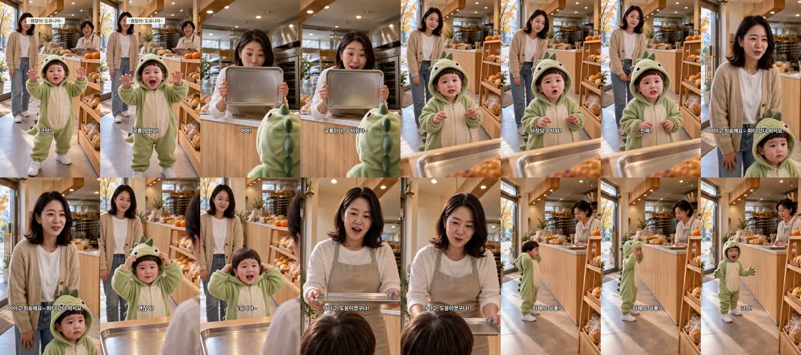

할로윈 공룡 옷 빵집 편 — 완성본 검수
2026-10-22 · doyoon-dino-bakery-001 · 판 R12 · 23.8초 · 1080×1920 · 업로드·승인 큐 등록은 아직 안 했습니다
소리로 확인 부탁드릴 것
① 7컷 «이제 또 공룡!» — 자동 받아쓰기가 «공유»로 적었습니다. 아기 발음(공뇽)으로 보이지만 귀로 확인이 필요합니다.
② 3컷 «사장님 무서워? 진짜?» — 도윤이 음높이 320Hz로 경고선(330Hz)보다 약간 낮습니다. 걱정하는 말투라서로 보이며, 유치원생처럼 들리는지 확인 부탁드립니다.
③ 첫 2.4초 제목 글씨 «괜찮아! 도유니야~» — 결말 대사가 처음에 먼저 보입니다(제가 초안에 그렇게 넣었습니다). 고치면 대본 단계부터 다시 만들어야 해서 영상 생성까지 다시 듭니다(약 $0.4).
컷별 실측
| 컷 | 말한 사람 | 대사(받아쓰기) | 음높이 |
|---|---|---|---|
| 1 | 도윤 | 강/칸! 공룡이 왔다! («크앙» 의성어) | 516Hz |
| 2 | 사장님 | 어머! 공룡이다! 무서워라! | — |
| 3 | 도윤 | 사장님 무서워? 진짜? | 320Hz |
| 4 | 엄마 | 아이고 죄송해요 파티 갔다 와서요 | — |
| 5 | 도윤 | 괜찮아! 도윤이야! (표기 «도유니야») | 372Hz |
| 6 | 사장님 | 아이고, 도윤이었구나. | — |
| 7 | 도윤 | 이제 또 공유! 크아앙! | 410Hz |
컷마다 말 앞 무음은 잘라 냈고(1컷은 1.3초), 마지막 말 뒤 0.12초에서 끊었습니다. 그래서 7컷 끝의 «사장님이 다시 쟁반을 드는» 장면은 잘렸습니다(대사 뒤 여백 규칙).
1.5초 간격 장면
